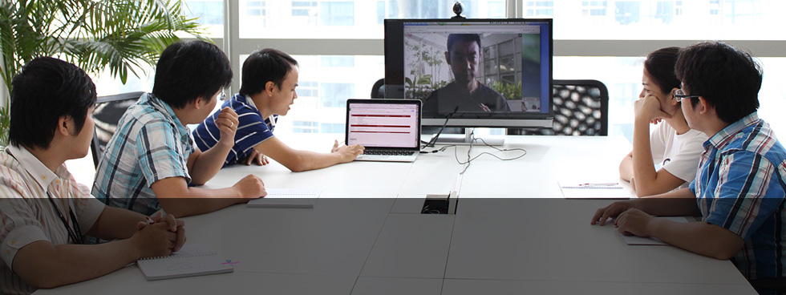

開発事例インタビュー
デジタルコンテンツ業界の注目起業がオフショア開発を選んだ理由とは？
開発を振り返って（フランジア）
「エンジニアが自分で考えて動く」環境を整えたい
piece of cake のラボメンバーにはFramgiaの新人エンジニアが多くアサインされています。これは原永様の「地頭が良く、ポテンシャルの高い若手を教育して育てて行きたい」というご要望があっての事です。しかも、BrSEは無し、全て英語でのコミュニケーションで進めています。
正直これは結構難易度の高い事だと思います。しかし、ポイントを抑えながらマネジメントする事でかなりスムーズにスタートを切っていた印象です。タスクの振り方や、日報の使い方など、細かい所一つ一つ挙げてもとても参考になります。
ただ、上手くプロジェクトが回っている何よりの要因は、原永様はじめチームメンバー全員、「同じ目線で仕事をする」というのを意識しているからだと思います。その中で役割分担をしっかりとしているからこそ、お互い信頼し合って良い仕事が出来るのだと思います。なので、ラボのメンバーは全員自分のやるべき事、やって行かなければならない事を良く理解出来ています。
弊社の現状の課題は、「エンジニアが自分でサービスの事を考え、動く」という環境がまだ無い事です。ただ、こちらの課題もメンバー自身が良く理解している為、スピード感を持って整える事が出来ると思っております。信頼ベースで任せて頂いている部分が大きいため、その信頼に答える事が出来るよう実績を積み上げ、もっと成長して行ければと思います。

COO 小林 泰平
重要な開発まで任せてくれました
プロジェクト開始の際にCEO加藤さんから「一緒にプロジェクトを成功させ、お客様を満足させて、お金を稼ぎ一緒にお金持ちになりましょう」と言われました（笑）すでに多くのユーザーが利用しているサービスなので、小さなミスで多くのユーザーに迷惑をかけぬよう、自分達がサービスを運営している事を意識して、高品質なものを提供できるように日々開発に臨んでいます。
日本チームとベトナムチーム、シンガポールチームは毎週ビデオチャットでお互いに顔をみながらMTGを行い、チームの一貫性を大事にしています。 毎回原永さんは今後の新しい機能についての話などを、ビジネス面の計画など交えて共有してくれるので、すごく信頼して頂いているのだと感じます。 ラボメンバーはまだ若くて経験が少ないので、プロジェクト開始時には正直不安がいっぱいでした。しかし大量データを扱っているサービスにとって重要な検索機能の開発まで任せてくれました。
今後もベトナム側の開発チームの役割を一層発揮できるようにチーム全員頑張りたいと思います。

システム開発部 1部 部長 Dung
自分のアイデアも展開することができました
開発者の目から見ると製品の成功は、製品を開発するためのアイデア及び技術の導入方法によって決められると思っています。
Cakesを始めて触ったときに、ユニーク性と大胆さを感じました。Cakesは、本に興味のある人たちのために作者と読者との架け橋となり、非常に良いサービスを提供しています。オリジナルのアイデアを高度な技術を使用して展開することによって、コンテンツ、インターフェース、パフォーマンスのどれもが優れている製品に作り上げられていると思います。
noteはCakesよりもそれが顕著だと思います。note.muは書く人と読む人の架け橋になり、豊富なコンテンツと面白いサービスを有する特別なSNSになっています。技術的な話しでは、新らしくてパワフルなAngularJSフレームワークをフロントエンドに使用しています。AngularJSとRuby on Railsのコンビネーションの凄さを体験することができました。これは本当に良かったです。Piece Of Cakesと一緒に開発させていただき、大変勉強になっています。開発している中で、自分のアイデアも様々展開することができました。これからもnote.muに関する良いサービスをどんどん作り上げたいと思っています。

リードプログラマー Phuong
ベトナムのオフショア開発の視察、システム開発に関するご質問、
お仕事のご相談、お見積の依頼など、お気軽にお問い合わせください。